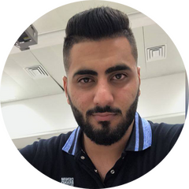

|  |
Tarek SalehComputer Science Student at Haifa University. Student to Computer Science in Haifa University 2 semesters until graduation. Able to work under pressure, team player, fast learner, good communication skills. |
|
|
|
| Dates | Work |
|---|---|
| 2018 -2020 | Coordinator, Israel Cancer Association - Lecturer and volunteer coordinator in middle schools. |
| 2016-2017 | Customer Service Representative, Area Expert and Trainer, Babcom for Cellcom, Misgav - Worked in a team, under pressure, Promoted after 6 months to Area Expert and Trainer. |